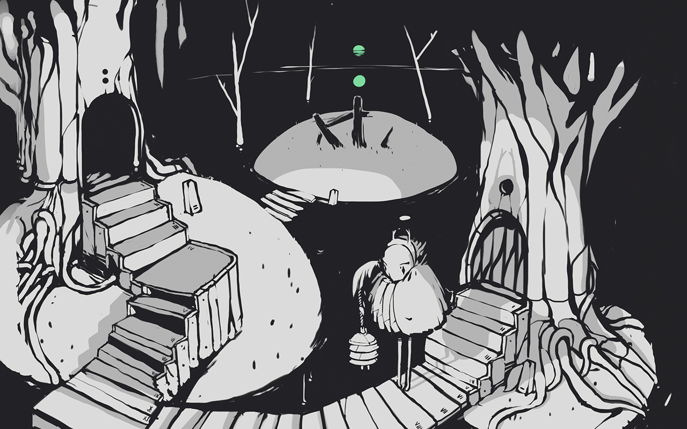

neauismetic
The Neauismetic albums are audio diaries from the early ages of the Neauismetica.

vetetrandes lettres
Vetetrandes Lettres's songs sings of the first ages of Dinaisth on the island of Vetetrandes.

from saharaphorest
From Saharaphorest is an album telling the tale of a visit at Paradichlorisse.

ehrivevnv studies
The Ehrivevnv Studies is an album exploring the Dinaisth region surroudning Andes' office.
yajnev studies
The Yajnev Studies is an upcoming album exploring Yajnev' sector Vetetrandes.
telekinetic
Telekinetic is a Laeisthic concept album performed live with the Leap Motion controller.

es gulf sunflowers
Es Gulf Sunflowers is a Neauismetic album.

damoiseau canalx
Damoiseau Canalx was created in the spirit of Blam, exploring industrial sounds with 2-step styles.
the sixth season
The Sixth Season sings the Neauismetic tales of the establishment of the Oasis by Rlionn.